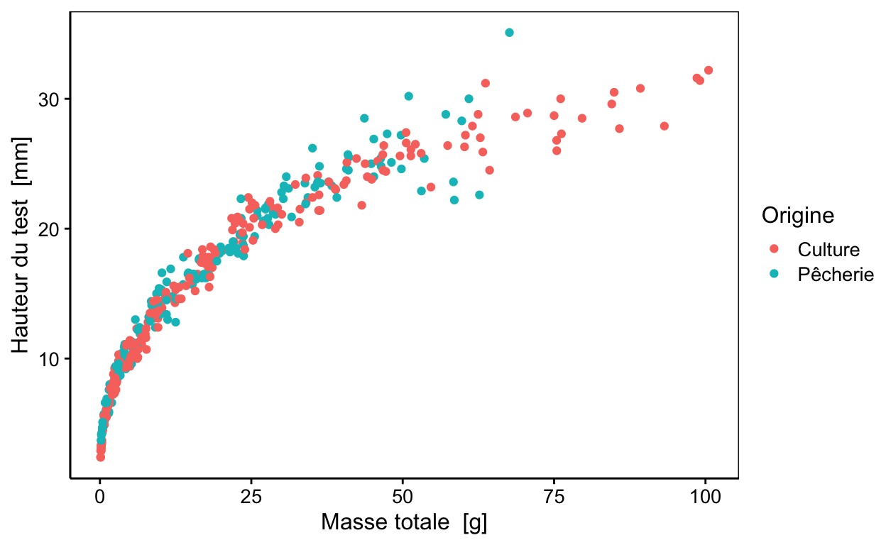
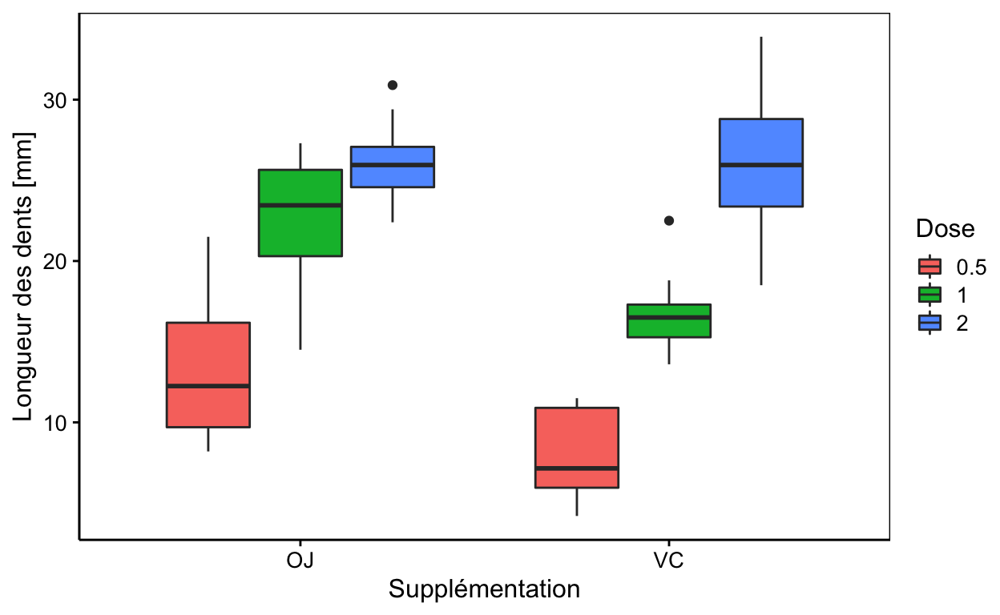
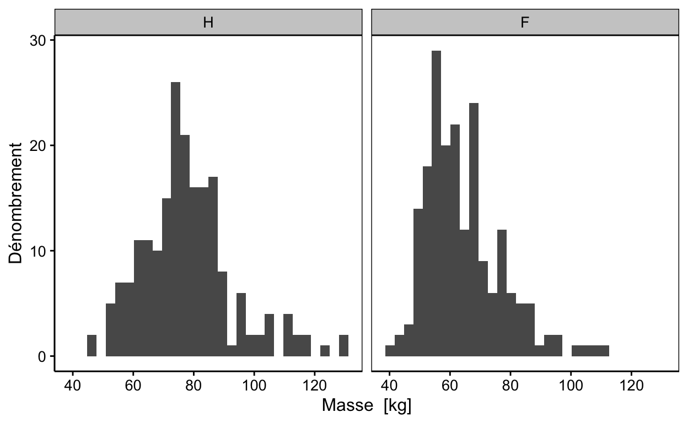
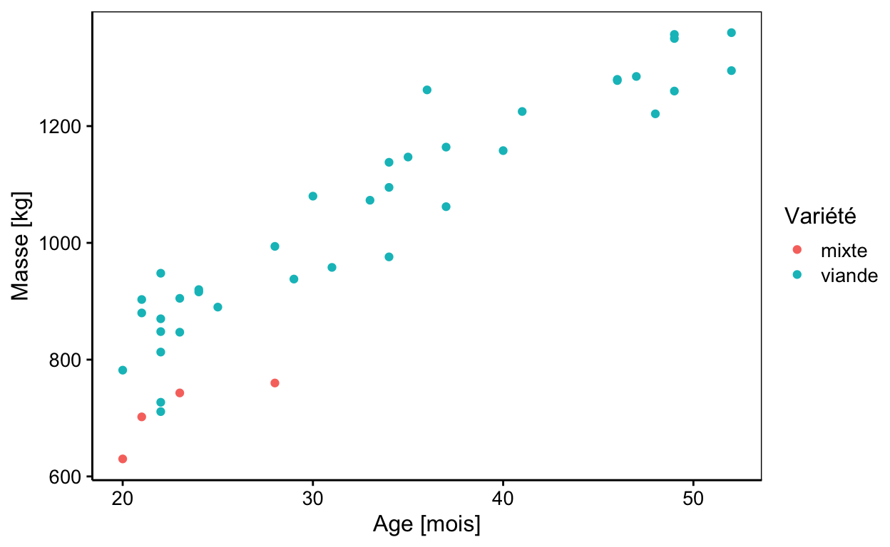

Science des données biologiques II
Réalisé par le service d'Écologie numérique, Université de Mons (Belgique)Objectifs
- Réviser les notions du cours de Science des Données I.
Logiciels
Répondez aux questions ci-dessous.
Git et GitHub
Au cours de Science des Données, nous utilisons abondamment Git et GitHub. Assurez-vous d’avoir bien retenu la terminologie spécifique associée à ces outils de gestion de version.
Situation 1
Deux chercheurs distants de plusieurs centaines de kilomètres, collaborent sur un projet commun. Ils ont pour cela décidé d’employer un outil de gestion de version et d’héberger ce projet sur un système web dédié pour cela.
Sur base du schéma ci-dessous où chaque cercle de couleur correspond à un état du système de gestion de version de la situation expliquée, répondez aux questions suivantes.

Situation 2
Le chercheur 2 s’intéresse au projet du chercheur 1, travaille dessus et propose des modifications afin de l’améliorer. Le schéma suivant représente l’évolution du système de gestion de version. Sur cette base, répondez aux questions suivantes.

Situation 3
Le chercheur 2 vient d’intégrer le projet que le chercheur 1 réalisait seul. Il doit donc acquérir une copie du dépôt pour la première fois sur sa machine avant de pouvoir contribuer à ce projet. Sur base du schéma ci-dessous qui représente le travail des deux chercheurs, répondez aux questions suivantes.

Biométrie d’oursins
Sur base des données qui sont mises à votre disposition, reproduisez le graphique ci-dessous :

Le jeu des données mis à votre disposition est urchin_bio du package data.io qui comprend les variables suivantes : origin, diameter1, diameter2, height, buoyant_weight, weight, solid_parts, integuments, dry_integuments, digestive_tract, dry_digestive_tract, gonads, dry_gonads, skeleton, lantern, test, spines, maturity, sex.
# Importation des données
urchin <- data.io::read(___, package = ___, lang = "FR")
# Votre graphique
chart(___, ___ ~ ___ %col=% ___) +
geom_point()# Importation des données
urchin <- data.io::read("urchin_bio", package = "data.io", lang = "FR")
# Votre graphique
chart(___, ___ ~ ___ %col=% ___) +
geom_point()
# Relisez le chapitre 2 du livre Science des Données 1 <https://wp.sciviewg/sdd-umons/># Importation des données
urchin <- data.io::read("urchin_bio", package = "data.io", lang = "FR")
# Votre graphique
chart(urchin, ___ ~ ___ %col=% ___) +
geom_point()
#### ATTENTION: Hint suivant = solution !###### Solution ##
# Importation des données
urchin <- data.io::read("urchin_bio", package = "data.io", lang = "FR")
# Votre graphique
chart(urchin, height ~ weight %col=% origin) +
geom_point()Croissance de dents
Sur base des données qui sont mises à votre disposition reproduisez le graphique ci-dessous :

Le jeu des données mis à votre disposition est ToothGrowth du package datasets qui comprend les variables suivantes : len, supp, dose.
# Importation des données
tooth_growth <- read("ToothGrowth", package = "datasets") %>.%
mutate(., dose = as.factor(dose))
# Votre graphique
chart(___, ___) +
___ +
labs(___)# Importation des données
tooth_growth <- read("ToothGrowth", package = "datasets") %>.%
mutate(., dose = as.factor(dose))
# Votre graphique
chart(___, ___ ~ ___ %fill=% ___) +
___ +
labs(x = ___, y = ___, fill = ___)
# Relisez le chapitre 2 du livre Science des Données 1 <https://wp.sciviewg/sdd-umons/># Importation des données
tooth_growth <- read("ToothGrowth", package = "datasets") %>.%
mutate(., dose = as.factor(dose))
# Votre graphique
chart(tooth_growth, ___ ~ ___ %fill=% ___) +
___ +
labs(x = ___, y = ___, fill = ___)# Importation des données
tooth_growth <- read("ToothGrowth", package = "datasets") %>.%
mutate(., dose = as.factor(dose))
# Votre graphique
chart(data = tooth_growth, len ~ supp %fill=% dose) +
___ +
labs(x = ___, y = ___, fill = ___)# Importation des données
tooth_growth <- read("ToothGrowth", package = "datasets") %>.%
mutate(., dose = as.factor(dose))
# Votre graphique
chart(data = tooth_growth, len ~ supp %fill=% dose) +
geom_boxplot() +
labs(x = ___, y = ___, fill = ___)
#### ATTENTION: Hint suivant = solution !###### Solution ##
# Importation des données
tooth_growth <- read("ToothGrowth", package = "datasets") %>.%
mutate(., dose = as.factor(dose))
# Votre graphique
chart(data = tooth_growth, len ~ supp %fill=% dose) +
geom_boxplot() +
labs(y = "Longueur des dents [mm]",
x = "Supplémentation",
fill = "Dose")Une alternative aurait été d’utiliser la fonction labelise() sur le jeu de données ToothGrowth afin de spécifier un label et une unité à chaque variable.
Biométrie humaine 1
Sur base de données relatives à de la biométrie humaine, reproduisez le graphique ci-dessous :
`stat_bin()` using `bins = 30`. Pick better value with `binwidth`.
Le jeu des données mis à votre disposition est biometry du package BioDataScience1 qui comprend les variables suivantes : gender, day_birth, weight, height, wrist, year_measure, age.
# Importation des données
biometry <- read("biometry", package = "BioDataScience1", lang = "FR")
# Votre graphique
chart(___, ___) +
___() +
labs(y = ___)# Importation des données
biometry <- read("biometry", package = "BioDataScience1", lang = "FR")
# Votre graphique
chart(___, ~ ___) +
___() +
labs(y = ___)
# Relisez le chapitre 3 du livre Science des Données 1 <https://wp.sciviewg/sdd-umons/># Importation des données
biometry <- read("biometry", package = "BioDataScience1", lang = "FR")
# Votre graphique
chart(biometry, ~ ___ ) +
geom_histogram() +
labs(y = ___)# Importation des données
biometry <- read("biometry", package = "BioDataScience1", lang = "FR")
# Votre graphique
chart(biometry, ~ ___ | ___) +
geom_histogram() +
labs(y = ___)
#### ATTENTION: Hint suivant = solution !###### Solution ##
# Importation des données
biometry <- read("biometry", package = "BioDataScience1", lang = "FR")
# Votre graphique
chart(biometry, ~ weight | gender) +
geom_histogram() +
ylab("Dénombrement")Biométrie humaine 2
Calculer l’indice de masse corporelle imc (variable bmi en anglais) qui correspond à la formule suivante :
\[bmi = mass\ [kg]/height [cm]^2\] Vous travaillez toujours sur le jeu des données biometry du package BioDataScience1 qui comprend, pour rappel, les variables suivantes : gender, day_birth, weight, height, wrist, year_measure, age.
# Importation des données
biometry <- read("biometry", package = "BioDataScience1", lang = "FR")
# Calcul du bmi
biometry <- mutate(___, bmi = ___)
summary(biometry)# Importation des données
biometry <- read("biometry", package = "BioDataScience1", lang = "FR")
# Calcul du bmi
biometry <- mutate(___, bmi = ___/(___/100)^2)
summary(biometry)
#### ATTENTION: Hint suivant = solution !##### Importation des données
biometry <- read("biometry", package = "BioDataScience1", lang = "FR")
# Calcul du bmi
biometry <- mutate(biometry, bmi = weight/(height/100)^2)
summary(biometry)Rendement de patates
Des scientifiques belges s’intéressent aux rendements de deux variétés de pomme de terre : la bintje et la fontane. Après 110 jours, ils réalisent des prélèvements sur différentes parcelles en Belgique dont ils quantifient la production, exprimée en tonnes par hectare.
Reproduisez le tableau ci-dessous, le jeu de données mis à votre disposition se nomme pdt et les variables sont les suivantes : rendement, variete. La fonction de mise en forme du tableau est kable() du package knitr.
| Variété | Rendement moyen [t/ha] | Nombre de parcelles |
|---|---|---|
| bintje | 34.70195 | 18 |
| fontane | 38.41439 | 28 |
pdt %>.%
group_by(., ___) %>.%
summarise(., mean = ___, count = ___) %>.%
knitr::kable(., ___)pdt %>.%
group_by(., ) %>.%
summarise(., mean = ___, count = ___) %>.%
knitr::kable(., col.names = c(___))pdt %>.%
group_by(., ) %>.%
summarise(., mean = mean(rendement), count = n()) %>.%
knitr::kable(., col.names = c(___))
#### ATTENTION: Hint suivant = solution !####pdt %>.%
group_by(., variete) %>.%
summarise(., mean = mean(rendement), count = n()) %>.%
knitr::kable(., col.names = c("Variété" ,"Rendement moyen [t/ha]", "Nombre de parcelles"))Cet exercice s’inspire des observations relayé sur le site du sillon Belge de l’article consulté le 3 septembre 2019 suivant : https://www.sillonbelge.be/4731/article/2019-08-28/bintje-et-fontane-apres-110-115-jours-faute-de-casser-la-baraque-ces-deux
Taureaux d’élevage
L’association wallonne de l’élevage dispose de plusieurs centres d’insémination. Ils ont un recensement des différents taureaux reproducteurs. Réalisez par vous-même le graphique ci-dessous. Notez bien que dernier ne montre que les individus compris entre 20 et 55 mois. Vous avez à votre disposition le jeu de données beef qui comprend les variables suivantes : variety, name, age, height, weight

Voici quelques informations utiles sur ce jeu de données.
summary(beef) variety name age height
Length:66 Length:66 Min. :13.00 Min. :121.0
Class :character Class :character 1st Qu.:19.00 1st Qu.:132.2
Mode :character Mode :character Median :24.00 Median :140.0
Mean :31.47 Mean :139.6
3rd Qu.:40.75 3rd Qu.:147.0
Max. :80.00 Max. :163.0
weight
Min. : 448.0
1st Qu.: 704.2
Median : 910.5
Mean : 932.6
3rd Qu.:1176.0
Max. :1575.0 # Le jeu de données beef est déjà chargé en mémoire
# Réalisez votre graphique
beef %>.%
___(., ___) %>.%
chart(., ___) +
___() +
labs(___)# Le jeu de données beef est déjà chargé en mémoire
# Réalisez votre graphique
beef %>.%
filter(., ___) %>.%
chart(., ___) +
___() +
labs(___)
# La fonction pour filtrer des lignes d'un tableau selon une ou plusieurs conditions est filter()# Le jeu de données beef est déjà chargé en mémoire
# Réalisez votre graphique
beef %>.%
filter(., ___ & ___) %>.%
chart(., ___) +
___() +
labs(___)
# Les conditions au sein de la fonction filter() s'écrivent avec des opérateurs logique >, >=, <=, <, == ou !=
# et se combinent avec & (et) et | (ou)# Le jeu de données beef est déjà chargé en mémoire
# Réalisez votre graphique
beef %>.%
filter(., age >= 20 & age <= 55) %>.%
chart(., ___) +
___() +
labs(___)
#### ATTENTION: Hint suivant = solution !###### Solution ##
# Le jeu de données beef est déjà chargé en mémoire
# Réalisez votre graphique
beef %>.%
filter(., age >= 20 & age <= 55) %>.%
chart(., weight ~ age %col=% variety) +
geom_point() +
labs(y = "Masse [kg]", x = "Age [mois]", color = "Variété")Test de Student
Vous avez à votre disposition le jeu de données weight dont voici quelques informations :
# Nom des variables du jeu de données
names(weight)[1] "weight" "area" # Résumé des variables
summary(weight) weight area
Min. : 90.47 a:15
1st Qu.: 97.71 b:15
Median :100.00
Mean :100.33
3rd Qu.:102.71
Max. :112.32 Réalisez un test de Student bilatéral avec un seuil \(\alpha\) de 0.05 et de variances inégales.
t.test(___, ___ ~ ___,
alternative = ___, conf.level = ___ var.equal = ___)t.test(data = ___, ___ ~ ___,
alternative = "two.sided", conf.level = 0.95, var.equal = ___)t.test(data = ___, ___ ~ ___,
alternative = "two.sided", conf.level = 0.95, var.equal = FALSE)
#### ATTENTION: Hint suivant = solution !######Solutions##
t.test(data = weight, weight ~ area,
alternative = "two.sided", conf.level = 0.95, var.equal = FALSE)Choix d’un test statistique
Conclusion
Vous venez de terminer votre séance d’exercice de révision.